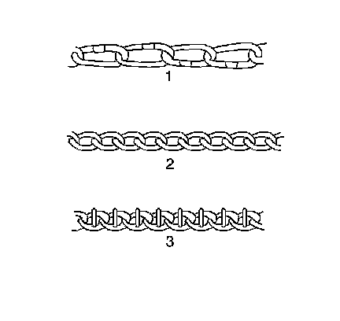

Tire Chain Usage Description
Tire Chain Usage Description
Tire Chain Usage Description:

When you use tire chains, most current vehicles require the following chain types:
* SAE Class S or 1100 Series, Type PL tire chains (1)
* SAE Class U or 1200 Series, Type P tire chains (2)
* 1800 Series Lug Reinforced tire chains (3)
These chains are specially designed in order to limit the fly-off effect that occurs when the wheel rotates.
Manufacturers of tire chains have a specific chain size for each tire size. These ensure a proper fit when the chains are installed. Purchase the correct chains for the tires on which the chains will be used. Do not use rubber adjusters to take up slack in chains that are loose due to incorrect size. Always follow the chain manufacturer's installation instructions.
The use of chains may adversely affect handling. When using chains, remember the following information:
* Ensure that the vehicle is designed for chain clearance.
* Adjust the speed to road conditions.
* Avoid sharp turns.
* Avoid locked-wheel braking in order to prevent chain damage to the vehicle.
* Install the chains as tightly as possible on the drive tires. Tighten the chains again after driving 0.4-0.8 km (0.25-0.5 mi). Do not use chains on the non-drive tires. These chains may contact and damage the vehicle. If you use chains on the non-drive tires, ensure that there is enough clearance.
* Do not exceed 70 km/h (45 mph). Do not exceed the chain manufacturer's speed limit, if lower.
* Drive in a restrained manner. Avoid large bumps, potholes, severe turns, and other maneuvers that cause the tires to bounce up and down.
* Follow any other instructions from the chain manufacturer that do not disagree with the above.